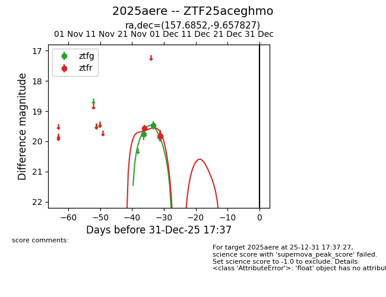
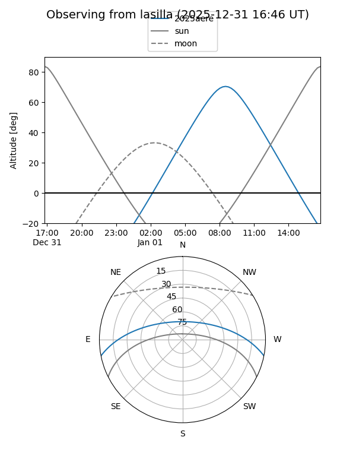
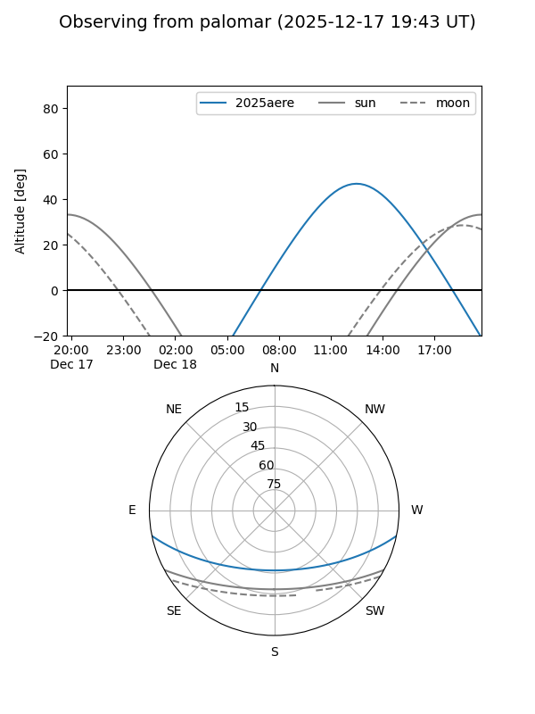
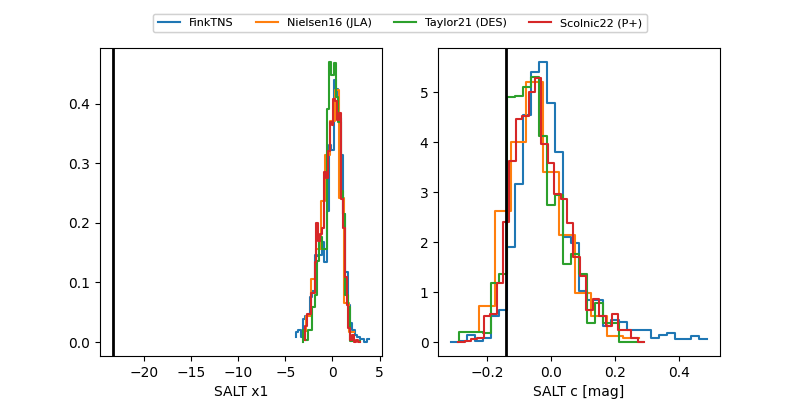

2025aere
Target 2025aere at 2025-12-18 11:17
Aliases and brokers:
FINK: fink-portal.org/ZTF25aceghmo
Lasair: lasair-ztf.lsst.ac.uk/objects/ZTF25aceghmo
ALeRCE: alerce.online/object/ZTF25aceghmo
TNS: wis-tns.org/object/2025aere
YSE: ziggy.ucolick.org/yse/transient_detail/2025aere
alt names
ZTF25aceghmo (ztf,fink_ztf)
2025aere (tns,yse)
Coordinates:
equatorial (ra, dec) = 157.6852,-9.65783
equatorial (HMS+DMS) = 10:30:44.46,-09:39:28.18
galactic (l, b) = (255.2319,+39.84194)
Photometry
last ztfg=19.84, ztfr=19.82
3 ztfg, 2 ztfr detections
Lightcurve

Visibility


Additional plots
